PROJECT 403
A narrative adventure told through two perspectives
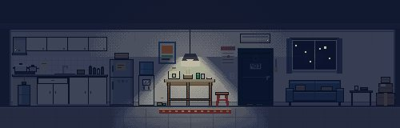
Project overview
Li Xi wakes up for a night shift and discovers that her keys are missing. To retrieve them, she borrows the perspective of her black-and-white cat. That familiar routine introduces the central mechanic of Project 403.
The playable prologue follows Li Xi from her apartment to the convenience store, night market, and back alley. Side-scrolling exploration shifts into a low, 3D cat view at specific moments.
Story premise
The game takes place in Li Xi's dream during a laboratory experiment. Wang He is her coworker at the company in waking life.
- Engine
- Unity 6
- Genre
- Narrative adventure / light puzzles
- Format
- Playable prologue
- Build
- Windows PC
Folklore and residential spaces
The cat's pact came from chumaxian, a folk practice in northeast China involving animal spirits. For the apartment, I looked at homes in Nanjing and sketched how to turn those everyday interiors into pixel art.
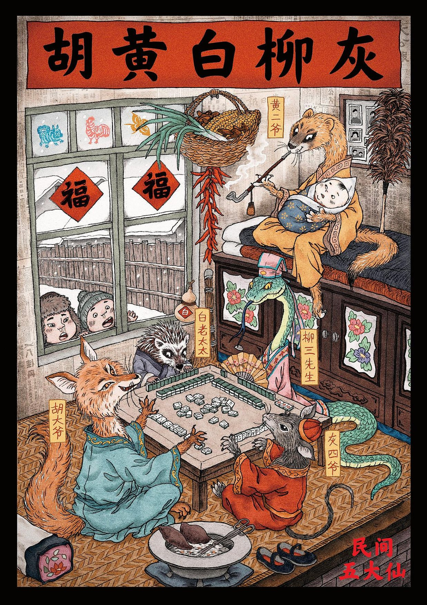
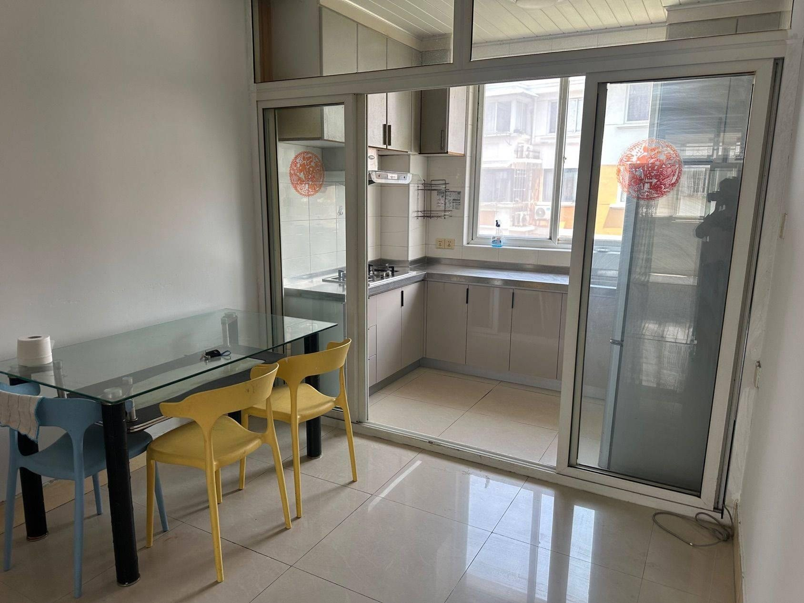
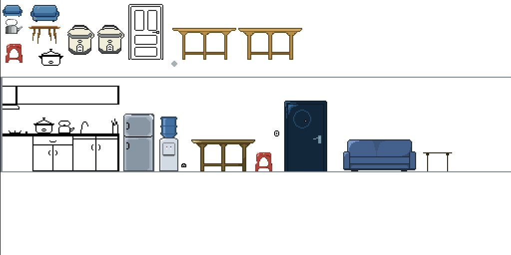
Where Li Xi and the cat came from
I used to wonder what would have happened if I had stayed in China for college. Li Xi came from that thought. She graduates unhappy with her degree, takes a night job at a convenience store and drinks to get through it.
I originally called her Xili. It sounds a little like "silly" and echoes a Chinese expression for being scatterbrained. I imagined someone new to working life who still gets things wrong.
I imagined a black-and-white cat with just enough spiritual ability to make a pact with Li Xi. The cat wants to become an immortal spirit.
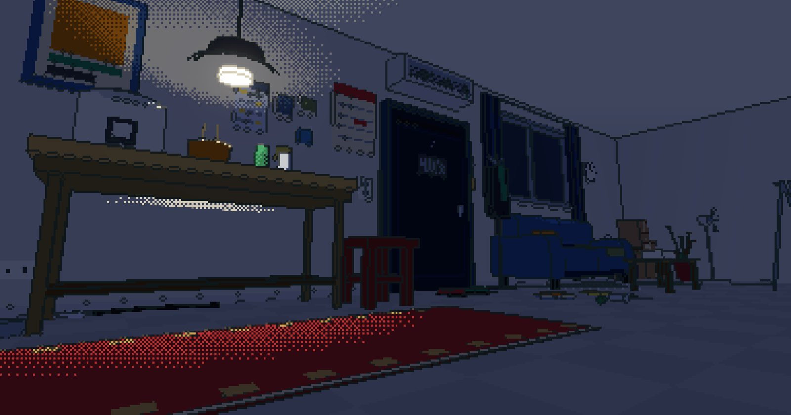
Core gameplay
Explore as Li Xi, notice a clue, then use the cat's vantage point when the game lets you switch.
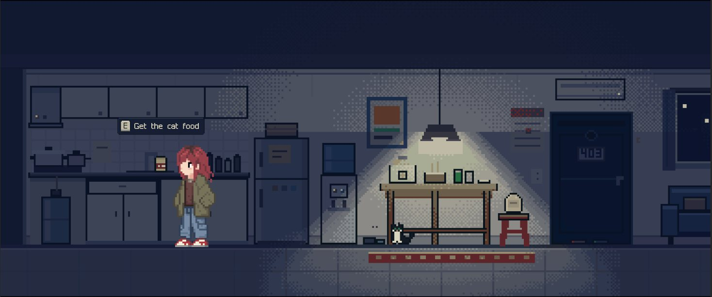
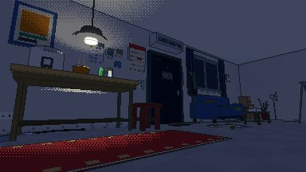
Prologue route
The route moves from a quiet apartment to a late-night market before the search for the cat turns into a chase.
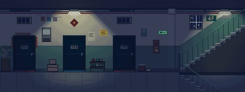
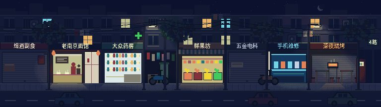
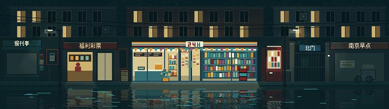
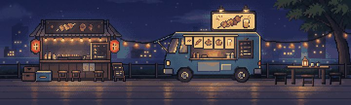
Environment artwork
Two perspective puzzles
The apartment teaches players to look lower. The convenience store asks them to find a way up.
Room prototype capture
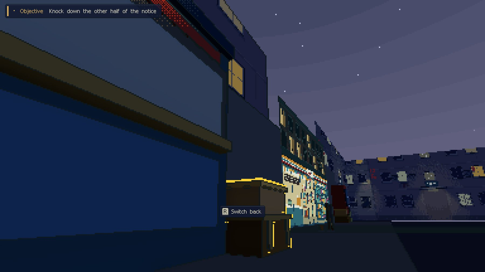
Convenience store / 3D cat view
From night market to chase
Everyday interactions slow the pace before the missing cat pulls Li Xi into the back alley.
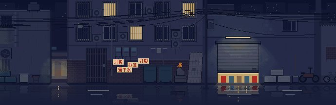
Night market and alley environment artwork
3D corridor chase
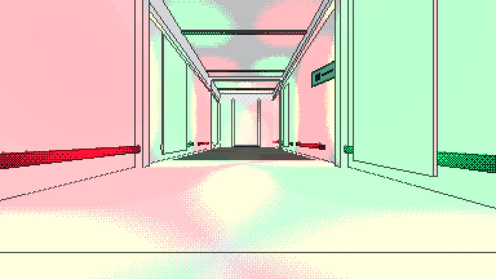
Steer through the corridor
The cat accelerates on its own. Steer left and right to avoid obstacles as the doorway at the end grows brighter.
Obstacle feedback
Hitting an obstacle briefly slows the cat and shakes the view.
Visual design and iteration
The 3D cat view uses a low-resolution render target to keep a pixelated silhouette alongside the 2D art. Room tests refined how lighting and detail read at that resolution.
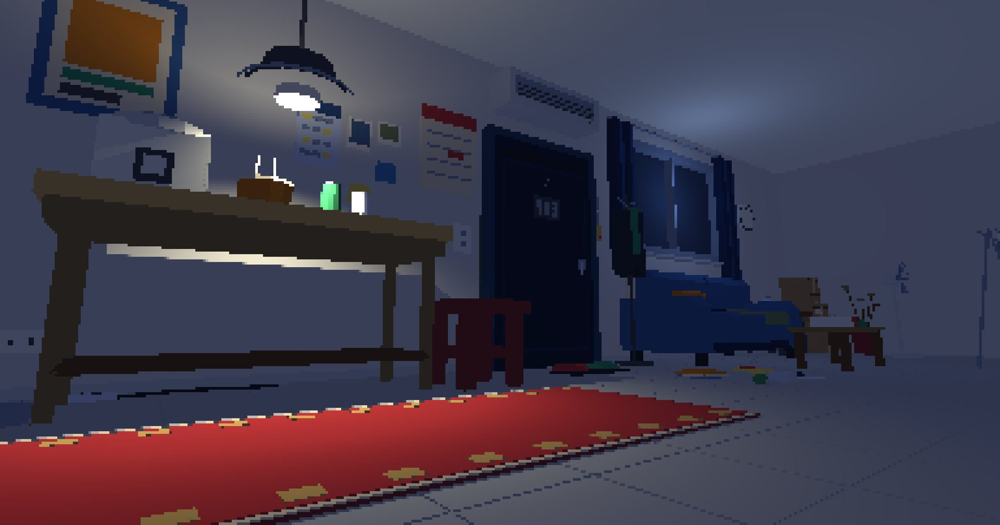
Switching views and lighting the 3D room
Switch the active world and camera
SetCatView swaps the world and camera, disables the 2D player in cat view, and notifies listeners only when the perspective changes.
bool changed = enableCatView != isCatView;
if (syncPositions && enableCatView != isCatView)
SyncPosition(enableCatView);
isCatView = enableCatView;
if (world2D != null)
world2D.SetActive(!isCatView);
if (world3D != null)
world3D.SetActive(isCatView);
if (mainCamera2D != null)
mainCamera2D.gameObject.SetActive(!isCatView);
if (catCamera3D != null)
catCamera3D.gameObject.SetActive(isCatView);
if (playerMovement != null)
playerMovement.enabled = !isCatView;
if (playerBody != null)
playerBody.simulated = !isCatView;
if (changed)
ViewChanged?.Invoke(isCatView);
Keep the light on the pixel grid
At 384 × 216, the shader dithers between light bands on a 4 × 4 grid. The emission map's red channel controls where bulb glow is added.
float Bayer4x4(float2 pixelPosition)
{
const float thresholds[16] = {
0,8,2,10, 12,4,14,6, 3,11,1,9, 15,7,13,5
};
uint2 pixel = (uint2)pixelPosition & 3;
return (thresholds[pixel.y * 4 + pixel.x]
+ 0.5) / 16.0 - 0.5;
}
half ToonBand(float irradiance, float bayer)
{
float compressed = 1.0 - exp(-irradiance);
float intervals = _BandCount - 1.0;
return saturate(floor(compressed * intervals
+ bayer * _BandSoftness + 0.5) / intervals);
}
// From the fragment shader
half emissionMask = SAMPLE_TEXTURE2D(_EmissionMap,
sampler_EmissionMap, input.uv).r;
half3 emission = albedo * (emissionMask
* _EmissionStrength + _BaseGlow);
Character pixel art / Li Xi
Li Xi has two sprite sets for the prologue. She wears her backpack after getting ready to leave the apartment.
Without backpack
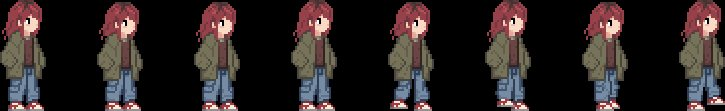
With backpack
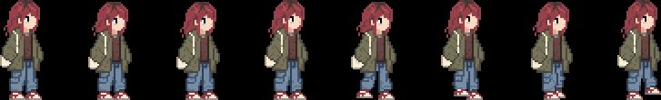
Character pixel art / Wang He
Wang He is Li Xi's coworker at the company in waking life. The prologue uses a standing frame from this sprite sheet for the coworker at the convenience store and night market.
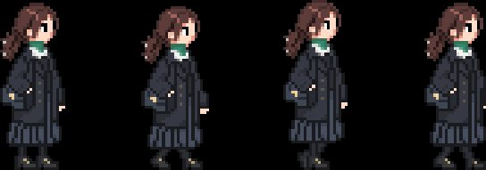
What I want to build after the prologue
Continue Li Xi's story
In the ending I planned, a flash would wake Li Xi on an operating table just as the cat broke through the door. She had been remembering their first night together, with details mixed up. She and Wang He would turn out to work for a state-owned company that deals with animals hoping to become spirits.
Make the two perspectives part of the puzzle
I want to make the cat's field of view and color perception part of the puzzles. I built the current 2D and 3D views as separate scenes, and matching their positions was difficult. Next I want to test keeping both views in one 3D scene and constraining movement and camera depth for the side view.